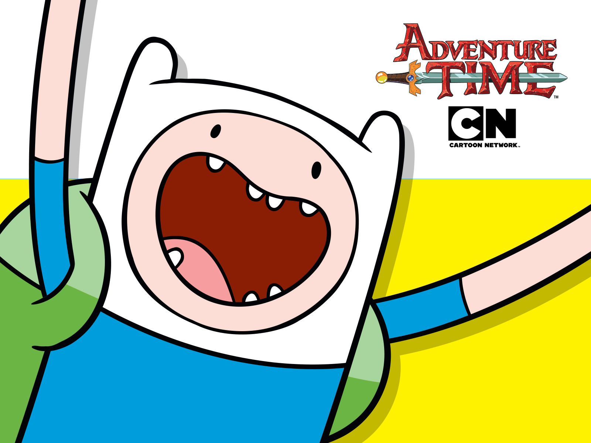

Finn Mertens
Finn é o protagonista de Hora de Aventura.
Finn é um garoto humano de 17 anos, que junto com seu irmão Jake,
vive procurando aventuras pela Terra de Ooo, salvando as pessoas de perigos e seres do mal.